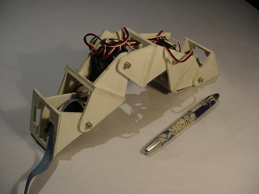
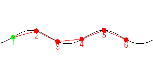

Next: 3 Tabla de control Up: Alternativas Hardware para la Previous: 1 Introducción
El robot ápodo Cube Reloaded (figura 1) está siendo diseñado en la UAM como una versión mejorada de Cube[12,13]. La primera versión está constituida por 4 módulos iguales cada uno con un servomecanismo Futaba 3003 muy comunes en aplicaciones de aeromodelismo. En conjunto, los cuatro módulos se asemejan a un gusano. Estos servos se controlan mediante una señal PWM de 50Hz y anchuras de pulsos comprendidas entre 0.3 y 2.3ms. La electrónica y la alimentación se encuentran fuera del gusano. Los módulos están conectados de manera que todos pertenecen al mismo plano, por lo que el gusano sólo puede moverse en línea recta. Para conseguir el movimiento se utilizan tablas de control, igual que en Polypod y Polybot, que son generadas mediante un software de simulación[13] (figura 2) . Cada fila contiene la posición de todos los servos, en un instante de tiempo. Las posiciones de los servos se calculan aplicando ondas sinusoidales que recorren el gusano desde la cola hasta la cabeza. El movimiento se consigue recorriendo la tabla y enviando las posiciones a los servos. Se trata de un método de control sencillo y eficaz, que se puede implementar muy fácilmente en microcontroladores de 8 bits. El control es en bucle abierto. Para el control de Cube Reloaded se ha empleado una tarjeta CT6811[11], que genera las señales PWM a partir de la tabla de control que tiene almacenada en la memoria eeprom o que recibe desde el PC a través del RS-232.
|
 |
|
 |
Juan Gonzalez 2003-12-29